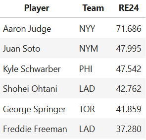
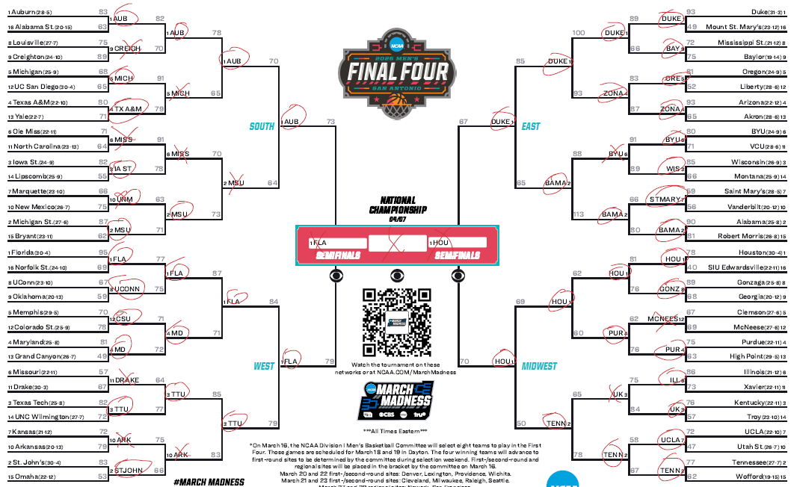
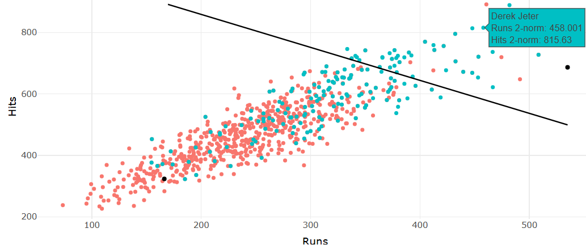
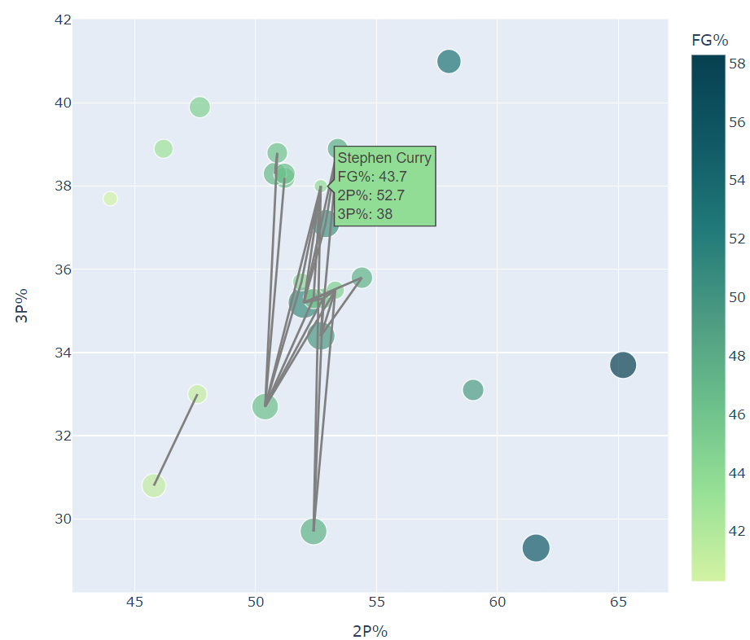
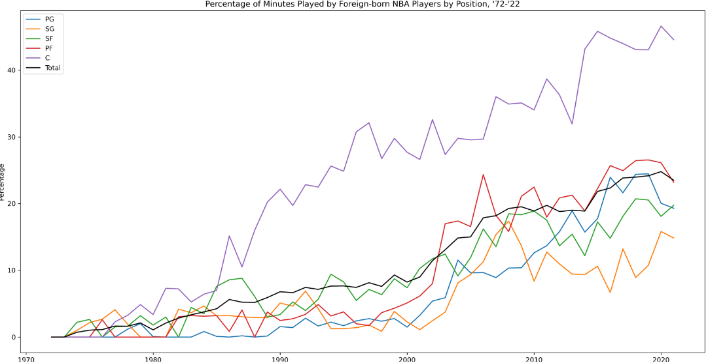

RE24 in 2025
A stepping stone for a larger project, I created a one-stop shop for those who want to find the 2025 leaders in RE24 and kept the code open source for people to compute the statistic in future seasons.
Graph Theory and Linear Algebra in the Wild
Some applications of linear algebra and graph theory for some ranking projects. For ranking NCAA Basketball teams, I used Massey's method, which incorporates multiple linear regression, and a PageRank algorithm, which incorporates eigenvectors. For ranking the connectness of musicians, I used various measures of centralities. Here's a recording of me discussing it.
ℓ^p Norms in Baseball
A spruced up example of a Shiny App I made for my students. I added an idea from real analysis to give users the option on how they'd like to weigh peak performance vs. longevity, and sprinkled in some logistic regression on top.
Simpson's paradox in the NBA
A neat graphic I made to visualize the paradox amongst the shooting percentages of the NBA's top scorers in the '21-'22 regular season.
NBA Globalization
A neat graphic I made to visualize the minutes played by foreign-born players in the NBA, stratified by position.